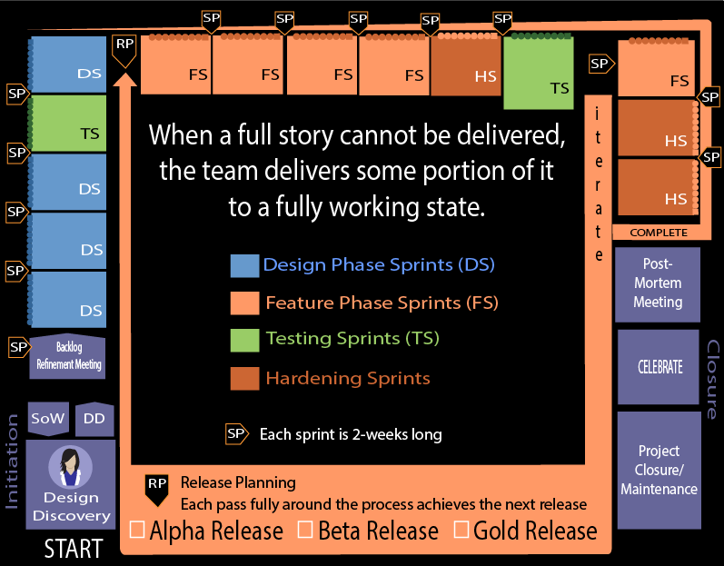
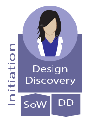
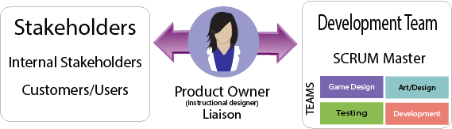
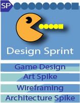
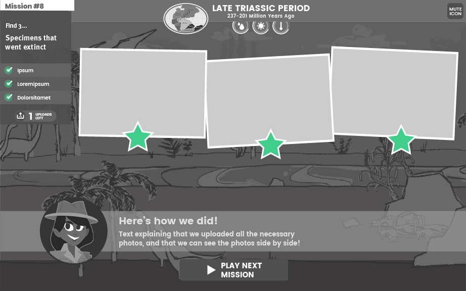

July 31, 2026
- gamedesign
- gamedev
For the past 18 years, we’ve been refining our abilities, expertise, and Agile approach to game development, consistently delivering captivating and high-quality games while adhering to deadlines and budgets. But how do we do it? Here’s an overview of our methodology.
To start, the graphic below shows a timeline of our comprehensive production process. Please note that the graphic shows an example and that the number of sprints in a given release may vary due to the distinct scope of each project.

Initiation
Production and Project Management Team
During Discovery, we explore product considerations such as the product vision, the target audience, the objectives the standards, assessment needs, and external requirements

At the contract level, we will document a specific set of Release Criteria; the mutually agreed-upon conditions needed for a Release to be Accepted. The formal Acceptance process for each Release will be detailed in each Statement of Work and will be facilitated using Jira, an industry-leading online project management and collaboration tool that allows us to document and track all Release Criteria and development tasks. Clients have access to Jira during implementation so that they have up-to-the-minute insight into our progress at all times. We’ll formally meet every two weeks for a Sprint review, during which we’ll discuss progress to date. Our teams are also available for adhoc meetings and communications on a daily basis. See below for details on the capabilities we use most in Jira as well as information about how we use the information generated by Jira to manage each project.
Statement of Work (SOW)
"SOW" refers to a Scope of Work—the foundational project management document that outlines a game's timeline, budget, and deliverables. In game development, an SOW defines exactly what the studio will build and ensures transparency between the studio and the client.
Design Document (DD)

The Design Document is a central reference roadmap rather than a lengthy detailed document. It is used to track specific features and establish a shared vision between the development team and client.
At this point, the lead on the project readies to turn their attention to the team and what needs to be done. In preparation, tasks that need to be done are created and those are organized into what tasks will be done in the first sprints. A sprint is a time segmented window that helps the team put first things first and not get distracted by tasks that should come at a later point in design or development.
Kick Off Meeting With All Stakeholders
The kick-off meeting is a 2-day meeting with all stakeholders which allows for discussions on the technical strategy and the refinement of team interaction preferences
Upon entering the development phase, we operate within milestones, grouped into phases: Discovery, Alpha, Prototype, MVP (Minimally Viable Product), Beta, and Gold. Biweekly, formal video conferences are held with clients to assess progress over the last fortnight and strategize for the upcoming sprint. In addition to these structured meetings, our team members and clients engage in frequent ad-hoc communication.
Core Concept & Vision: A high-level description of what the player will do and the project's primary objectives.
Design Pillars: Three to five fundamental design goals that guide all subsequent development choices.
Learning Objectives: In educational games, this outlines the exact skills or knowledge the player should take away.
Main Mechanics & Controls: Details on core player actions, how to perform them, and the resulting in-game feedback.
Art & Audio Style: Early visual and audio concepts, often paired with accompanying concept art and wireframes.
Basic Story Outline: A summary of the narrative (if applicable to the specific project).
Production Plan: Basic budget outlines and timeframes for development.
Alpha Stage - Design Sprint
By the time we reach the Alpha stage, our goal is to present a rudimentary playable version showcasing the primary game features. This phase involves internal play testing with our team, assessment by the client's group, and input from user testers within the target demographic. Given its early developmental status, the Alpha play test often identifies areas for enhancement. We swiftly work on these areas to integrate the feedback into future sprints.

The Agile Approach
With a refined Agile approach, our methodology ensures efficient and impactful production. From the initial project kickoff to the Gold Release, each phase is intricately designed to foster collaboration, innovation, and responsiveness. We begin with a backlog Refinement Meeting as the focus in the first sprint (seen at the bottom of the graphic below).

You can think of the Design Sprint as being four active areas. In the graphic above, note that there are four blue design Sprints (DS). Each 'SP' is a sprint. Each sprint is 2-weeks long. Notice the green 'TS' block. That is a testing sprint. The testing sprint is to be sure the process is far enough along without issues for the Architecture Spike to begin.
Now let's look more closely at what happens during the Design Sprint. Those four sprints I pointed out before, now you can see what happens across each sprint. Notice the little graphs in the Game Design, Art Spike, Wireframing, and Architecture Spike. You get a sense of the order in which things occur. It is necessary to get some of the initial game design started up front, but the game design will continue throughout the full Design Sprint. Next, there is enough in place for the art spike to begin. What is created here is art for the whole game, particularly the core UI components initially so that the wireframing phase can begin. In the wireframing phase the UI and overall look is developed. It will not look like the finished game, but there is enough there to get a good feel for the game. The Architecture spike is the phase where the core code and hardware architecture is put in place.

Design Sprint: Game Design Phase
Text
Design Sprint: Game Art Spike Phase
Game art can be static or animated, 2D or 3D. The process is a little different depending on which it will be.
2D Art
Animation starts internally with Motion Design. This involves the team sketching a concept of the final piece and creating basic animatics. These are used to identify the level of detail, timing, and the feeling the game should use to communicate the design goals effectively. Once established, the motion design is used for all pieces of animation in the game.
Next we create the finished 2D assets that will be prepared for animation with the client’s approval of the direction being taken.
Finally we create the animations. For characters and anything with complex moving parts we use Anima2D which is Unity’s skeletal animation system. For other types of animations such as UI animations we use Unity’s animation controllers and the Timeline system as appropriate to the task.
3D Art
Text

Text
Design Sprint: Wireframing Phase
To bridge text concepts and production, Filament Games pairs their Game Design Document (GDD) with a separate, visual wireframe pipeline. We keep wireframes out of the main GDD text, using them instead as a sequential mockup deck to map user experience before writing any code. By using wireframes, we avoid issues such as a game artist creates graphics only to find out that they needed to be broken up into parts to facilitate animation. A developer builds out a feature only to find that the feature was intended to work in a different way.

The "Two-Headed" Approach: They structure pre-production into two distinct documents: the GDD (focusing on rules, mechanics, and learning data) and the Wireframe Deck (focusing on layout, UI hierarchy, and user flow).
Click-Through Narrative: They build wireframes to read like a book or a slideshow. A developer should be able to click through the deck to experience the exact, logical sequence a player goes through from the title screen to the core gameplay.
Low-Fidelity Focus: Filament intentionally keeps wireframes simple, utilizing basic shapes, gray boxes, and temporary fonts. They stress that avoiding polished art during this stage prevents stakeholders from getting distracted by aesthetics rather than focusing on layout and functional flow.
Core Components in a Wireframe
Every screen modeled in a wireframe deck requires specific structural elements to be useful for engineers and artists:
Layout Blocks: Boxes that dictate the exact hierarchy and placement of UI elements, buttons, and instructional text areas.
Visual Placeholders: Rough sketches or boxes indicating where gameplay feedback, timers, scores, or pedagogical meters will live.
Callout Labels: Numbered circles or markers placed directly over UI elements to link the visual component to an explanatory note.
Functional Annotations: A dedicated sidebar or bottom panel detailing exactly what happens when a user clicks a specific button (e.g., "Launches reward animation," "Saves state and routes to Level 2").
Design Sprint: Architecture Phase
Incorporating and managing all of the software required for HTML5’s full potential is a job in itself. For a package manager we use Node.js’s npm/pnpm + Vite / esbuild. We use these tools to encapsulate and sync source code to specific versions. As a studio we went with rendering to PixiJS, Phaser or WebGL2 / WebGPU. Based on past experience writing large Javascript projects, for more robust and scalable code we went with Typescript. All of our external data is stored as JSON.
At this point we have mature JS engines to chose from and no longer have to make our own. For 3D, Unity is our go-to engine.
Alpha Stage - Feature Sprint
The design sprints are done for the time being and now the focus is on developing the features for the Alpha Release. This would be a subset of the features that would appear in the Beta and Gold Release. This is a code heavy phase where the interactions, player input, and player feedback is put into place.

Just as in the design phases, each sprint is 2-weeks long and there is a testing sprint built in, this time at the last sprint. This is an in-house/stakeholder play test at this phase, not a play test where users are yet involved. That will happen at the next stage.
Beta Stage
Advancing to the Beta (prototype) stage, we aim to introduce a playable version of all game features, incorporating adjustments from the Alpha play test. This stage is pivotal in validating the effectiveness of the changes for the intended learners. Engagement testing with real users of the game is an important aspect of this phase. Nevertheless, sprints are allocated after the Alpha play test to facilitate further enhancements prior to the Beta release.
Gold Release Stage
The Gold Release marks the public launch of the game. Depending on the intended platform, we deploy the game accordingly (e.g., embedding it on a chosen website or submitting it to platforms like the App Store or Google Play). We provide a standard 30-day warranty post-deployment for all our projects.